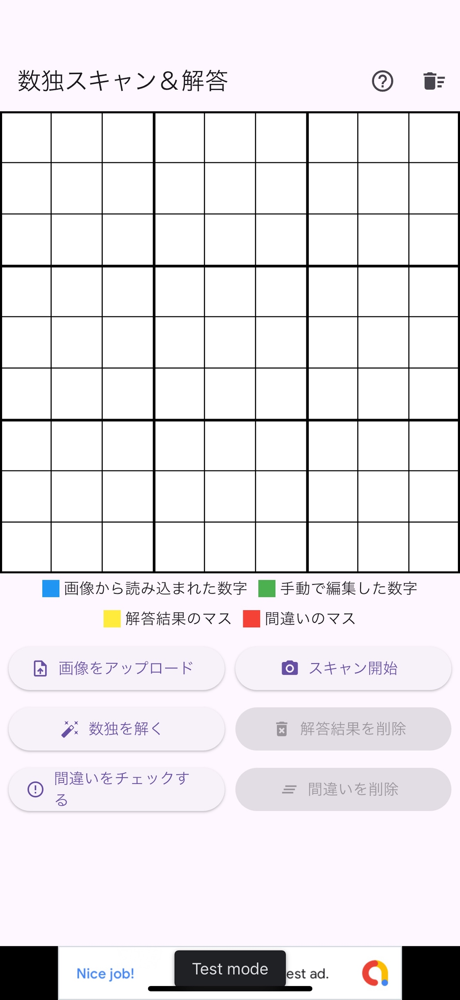
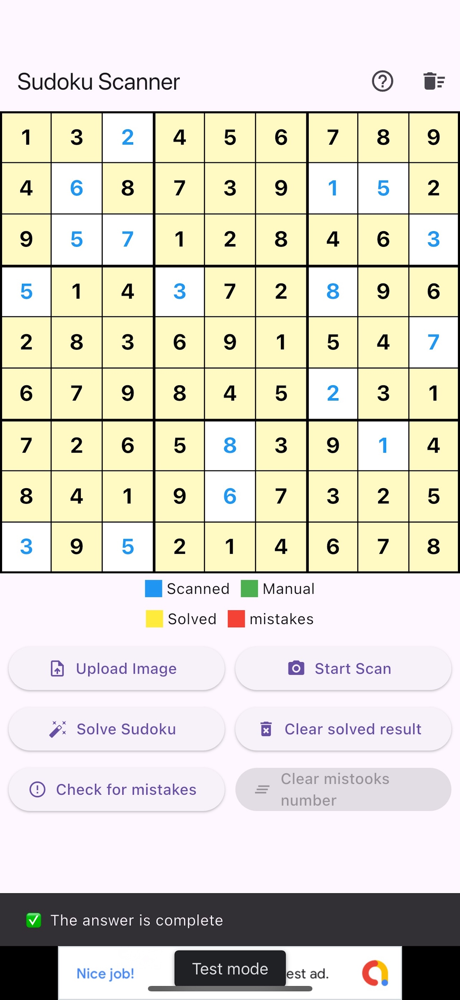
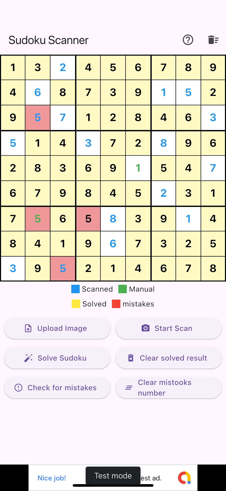

📷 Scan from Photo 📷 写真からスキャン
Take a photo of a Sudoku puzzle from a newspaper, magazine or book and scan the board. 新聞、雑誌、本などに掲載された数独を カメラで撮影して盤面をスキャンできます。
Scan Sudoku puzzles from photos, recognize the board, solve puzzles instantly, check your answers, and edit the board when necessary.
数独・ナンプレを写真からスキャンして盤面を認識。 解答の確認や答え合わせ、盤面の編集まで簡単に行えるiPhone向けアプリです。

Sudoku puzzles are often found in newspapers, magazines, books and puzzle collections.
Sudoku Scan & Solve lets you scan a Sudoku puzzle using your iPhone camera, recognize the board, and quickly check the solution.
You can also edit the recognized board manually, making it possible to correct recognition results before solving.
数独・ナンプレは、新聞、雑誌、本などさまざまな場所に掲載されています。
Sudoku Scan & Solveなら、iPhoneのカメラで数独を撮影して盤面をスキャンし、 解答を簡単に確認できます。
スキャン後の盤面は手動で編集できるため、 認識結果を修正してから解答することもできます。
Scan, solve, check and edit Sudoku puzzles with a simple interface. 数独のスキャン、解答、答え合わせ、盤面編集を シンプルな操作で行えます。
Take a photo of a Sudoku puzzle from a newspaper, magazine or book and scan the board. 新聞、雑誌、本などに掲載された数独を カメラで撮影して盤面をスキャンできます。
Quickly generate a complete Sudoku solution after the puzzle has been recognized. 盤面を認識した後、 数独の完全な解答をすばやく確認できます。
Check whether your Sudoku answer is correct. Useful for practice and puzzle solving. 入力した数独の答えが正しいか確認できます。 数独の練習や答え合わせにも利用できます。
Edit numbers after scanning to correct recognition results or create your own board. スキャン後の数字を自由に編集できます。 認識結果の修正や盤面の作成にも利用できます。
Take a photo of the Sudoku puzzle and scan the board. 数独をカメラで撮影して 盤面をスキャンします。
Check the recognized numbers and edit them if necessary. 認識された数字を確認し、 必要に応じて修正します。
Solve the Sudoku and check the complete solution. 数独を解いて、 完全な解答を確認します。


Sudoku Scan & Solve is an iPhone app that scans Sudoku puzzles from photos, recognizes the puzzle board, and provides a solution.
Yes. You can take a photo of a Sudoku puzzle from a newspaper, magazine, book or other printed source and scan it with the app.
Yes. You can edit the recognized numbers after scanning and correct the board if necessary.
Yes. You can use the app to check whether your entered Sudoku solution is correct.
Yes. Sudoku Scan & Solve is available as a free iOS application.
Sudoku Scan & Solveは、写真から数独・ナンプレの盤面をスキャンして認識し、 解答を確認できるiPhone向けアプリです。
はい。新聞、雑誌、本などに掲載された数独を 写真で撮影して盤面をスキャンできます。
はい。スキャン後に認識された数字を 編集・修正できます。
はい。入力した数独の答えが正しいかを 確認できます。
はい。Sudoku Scan & Solveは 無料のiOSアプリとして提供しています。
Download Sudoku Scan & Solve and try scanning your next Sudoku puzzle.
Sudoku Scan & Solveをダウンロードして、 次の数独をスキャンしてみてください。
Note: Sudoku Scan & Solve is designed to assist with Sudoku puzzle scanning and solving. Recognition results may vary depending on image quality, lighting and the puzzle layout.
ご注意： Sudoku Scan & Solveは数独のスキャンや解答を サポートするためのアプリです。 画像の品質、明るさ、数独の掲載状態などによって 認識結果が異なる場合があります。